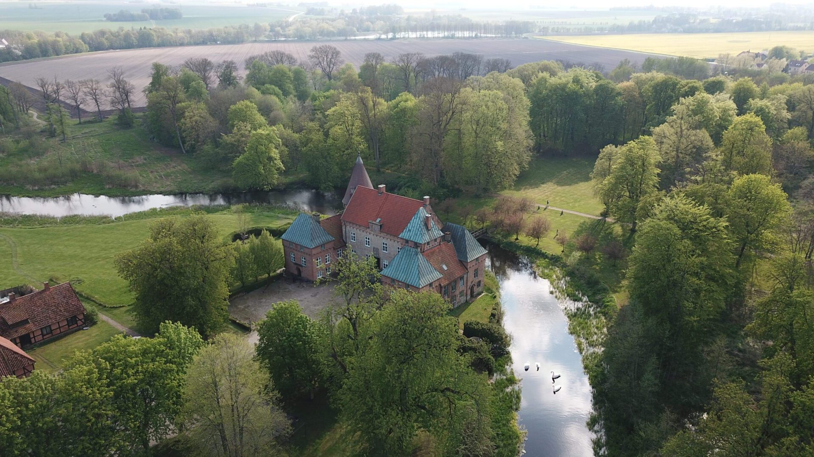

Vi träffades i börja av studierna och bondade direkt över ett gemensamt intresse i böcker, brädspel och diverse annat nörderi. Valborg 2019 blev vi officiellt tillsammans och nu cirka 7 år senare är ni alla bjudna till nästa stora steg i vår resa!
Välkomna till
Lina och Alfreds
Bröllop på Örtofta slott
9:e maj 2026

Bröllopsdagen kommer utspela sig på Örtofta slott. Dagen kommer att börja med en kyrklig vigsel på Örtofta kyrka. Därefter kommer vi röra oss till slottet för mingel och brudskål, och det kommer bjudas på bakelse. Efter mingel kommer vi röra oss till middagslokalen där en tre rätters middag kommer serveras. Under middagen välkomnar vi tal och annan underhållning från er, mer info om hur man anmäler sig till det finns längre ner. Efter middagen kommer dansgolvet och baren att öppnas. Vi hoppas att ni alla kan komma för att fira vår dag med oss.
Vi önskar att ni osar senast den sista januari via formuläret som finns länkat nedanför, men om ni redan vet får ni gärna osa tidigare.
Bröllopsdagen
Hela bröllopsdagen kommer ske på Örtofta slott och kyrka som ligger några hundra från varandra.
Vigsel börjar vid 14:00 på Örtofta Kyrka, var på plats i god tid då vigseln startar 14.
Cirka 15:30 kommer brudskål ske på slottet och därefter sker all aktivitet på slottet.
För att visa hänsyn till gäster med starka allergier ber vi er att inte ta mer er några djur,
hålla er till utpekade rökzoner, och inga starka dofter, t.ex. undvik överdrivet bruk av parfym.
Om du har några allergier eller sjukdom som du anser att bröllopssällskapet bör känna till under dagen får ni
gärna kontakta oss eller våra toastmasters.
Om ni vill hålla tal eller annars uppträda på middagen så ber vi er att kontakta våra toastmasters senast den sista Mars. Deras
kontaktuppgifter finns publicerade längst ned.
Om ni bara kan vara med på delar av dagen kontakta oss så kan vi komma med noggrannare hålltider.

Klädsel
Klädkoden för bröllopet är “Mörk Kostym”.
En bra definition av den återfinns här. Då
det är ett vårbröllop så uppmuntrar vi alla till färgglada
kläder, även herrarna, trots att dessa färger formellt sätt inte ryms inom klädkoden.
Reseinfo
Till Örtofta slott tar man sig lättast med bil eller pågatåg.
Om man kommer med bil så finns det parkering både vid slottet och vid kyrkan.
Om man kommer med tåg stiger man av på Örtofta station och går en kort scenisk vandring genom “Lyktornas
Park”.
För de som reser långt finns det ett antal rum på slottet som går att boka för gäster, de kostar
1200(enkelrum)-1450(dubbelrum) per natt. Det går att boka nätterna fredag- lördag, lördag-söndag eller båda.
Incheckning på lördag är vid 13:00, om man önskar tidig incheckning kostar det 300 extra och man får då checka in vid
9:00, om man anländer på fredagen är incheckningen från 15:00. Frukost är också inkluderat. Om ni vill boka ett
sådant rum så kan ni kontakta oss.
Uppskattning
Den största gåva vi kan få är såklart er närvaro på vår stora dag, men om man vill ge något utöver det så önskar vi oss antingen något från vår presentlist eller ett bidrag till vår bröllopsresa. Presentlistan organiseras i följande Facebook grupp, om man inte använder Facebook kan ni kontakta brudens mor på: aktinnerberg@gmail.com
Kontakt
Kontakt
Lina: lina.tinnerberg@gmail.com
Alfred: A.Langerbeck@pm.me
Toastmaster: toastmaster_LA_wedding@proton.me
Gåvor: aktinnerberg@gmail.com